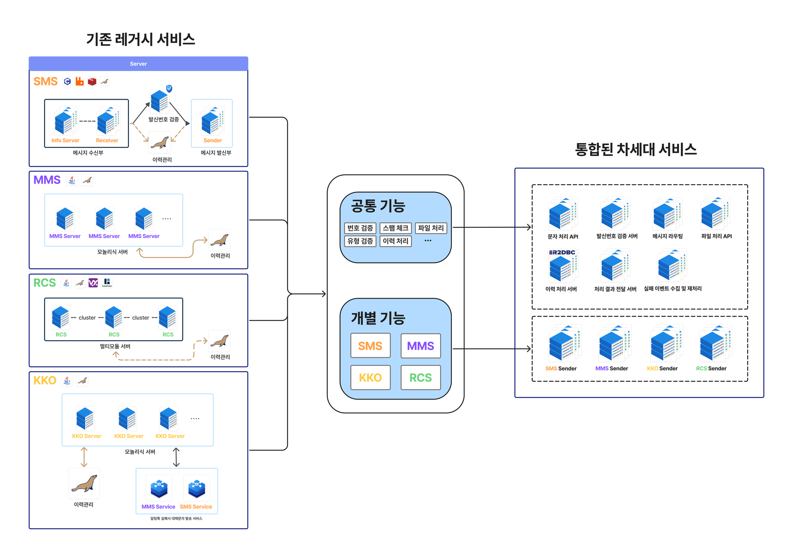

Java/Spring Cloud 기반의 시스템 통합으로 비용 감축과 업무 프로세스 개선
개발 언어 통합과 MSA를 선택한 이유
문자 전송 서비스는 클라이언트 인증, 발신번호 검증, 이동통신사 조회, 스팸 검출, 파일 처리 등 다양한 기능이 전송 과정에 연계되어 있으며, 정책과 사업 방향에 따라 기능이 계속 변경되거나 추가됩니다. 향후 신규 서비스가 추가될 경우 모놀리식 구조에서는 기능 간 결합도가 높아지고 변경에 따른 영향 범위가 확대될 것으로 판단해 MSA를 선택했습니다. 또한 기존 레거시 시스템에 분산되어 있던 문자 외부망 라우팅, 요청 접수, 전송 이력, 파일 관리, 스팸 처리 등의 기능을 응집도 기준으로 묶어 마이크로서비스로 분리했습니다.

Spring Cloud 도입과 서비스 개발
[ Spring Cloud를 도입한 이유 ]
- 다양한 레퍼런스
- Spring Cloud는 공식 Reference Documentation뿐만 아니라 Getting Started Guide와 기능별 Sample 프로젝트를 제공하고 있어, 기능의 동작 방식과 실제 구현 방법을 함께 확인할 수 있었습니다. 특히 Gateway, Eureka, Config Server, Circuit Breaker 등 MSA 구성에 필요한 기능별 예제 코드가 제공되어 아키텍처를 설계하고 구현하는 과정에서 참고하기에 충분하다고 판단했습니다.
- Spring Cloud의 실제 활용 사례
- 기술 자체의 기능뿐만 아니라 실제 서비스에서도 활용되고 있는지를 확인했습니다. 토스에서는 Spring Cloud Gateway를 이용해 대규모 MSA 환경의 Gateway를 구성하고 있으며, 사람인에서는 Spring Cloud Gateway, Eureka, Config Server 등을 조합해 실제 운영 API Gateway를 구축한 사례를 공개하고 있습니다. 또한 우아한형제들에서도 Spring Cloud Zuul로 API Gateway를 구성한 사례를 공개하고 있어, 운영 환경에서 충분히 검증된 기술이라고 판단했습니다.
- 지속적인 유지보수
- Spring Cloud의 GitHub를 확인했을 때 Gateway, Config, Circuit Breaker, Kubernetes 등 주요 프로젝트에서 Issue와 Pull Request가 지속적으로 관리되고 있으며, 새로운 버전도 꾸준히 릴리스되고 있음을 확인했습니다. 실제 운영 중 문제가 발생했을 때 기존 논의와 해결 사례를 참고할 수 있고, 장기적으로 사용하기에도 지속적인 유지보수를 기대할 수 있는 생태계라고 판단했습니다.
[ Spring Cloud를 적용한 차세대 아키텍처 ]

- Eureka와 LoadBalancer를 통한 정상 인스턴스 요청 분산, Discovery Server 3대 클러스터링으로 장애 대비
- Config Server를 통한 공통 설정과 서비스별 설정 중앙 관리
- Discovery Server의 인스턴스 조회 API를 활용한 서비스 상태 모니터링 구축
[ 백엔드 서비스 개발 ]
설계된 구성도에서 직접 개발을 진행한 서버들입니다.
Reactive Non-blocking 환경에 맞추어 Spring Webflux 기반으로 개발되었습니다.
Spring Cloud API Gateway
서비스 요청의 최초 진입점으로 내장 LoadBalancer를 통해 요청을 분산처리할 수 있으며, 요청 인증과 TPS 제한 정책을 주로 담당하는 서버입니다.
- 서비스 요청량 제한 구현 - Spring Cloud의 RedisRateLimiter의 Token Bucket 알고리즘으로 요청량이 제한되며, 클라이언트별로 관리할 수 있도록 구현했습니다.
- 서비스 요청을 처리하는 백엔드 서버에서 지연이 발생할 경우 스레드를 오래 점유하지 않도록 하는 Circuit Breaker 기반의 Fail-Fast 정책을 구현했습니다.
- 보안을 위해 사용자의 요청에 대해서 인증서버에서 발급한 JWT를 검증하고, 흐름에 필요한 데이터가 세팅되는 Filter를 구현했습니다.
Message API Server
고객에게 메시징 서비스를 제공하기위한 RESTful API 서버입니다.
- Jakarta Bean Validation 어노테이션 기반의 문자 규격 검사
- Redis SET NX를 이용한 메시지 중복 처리
Router
비즈니스의 핵심 서버로, 매출 수익을 위해 메시지 전송 쿼터량을 여러 외부망 Sender 서버에게 배분해주는 서버입니다.
- Redis에 외부망 전송 쿼터량과 메시지 단가 데이터가 저장된 데이터를 기반으로 가중치 알고리즘을 사용한 메시지 전송 로직을 구현했습니다.
Reporter
이동통신사 서버로부터 전달받은 발송 처리 결과를 고객사측에게 Webhook방식으로 전달하는 Report 서버입니다.
- Spring WebFlux WebClient 기반의 Webhook 모듈 구현 및 API 설계
- 서비스 품질을 위해 Timeout, Retry, Circuit Breaker 정책을 적용하고, HTTP 통신에서 발생할 수 있는 모든 예외처리를 작성했습니다.
DB Logger
플랫폼 내부에서 처리되는 문자 이력을 관리하는 서버입니다.
- DB I/O를 위해 Reactive Non-Blocking 환경에 맞는 R2DBC를 사용한 이력 저장 기능 구현과 높은 트래픽과 비동기 환경에서 과도한 Update를 방지하기위해 Upsert를 사용했습니다.
Storage Server
문자의 첨부파일을 관리하는 파일 서버입니다.
- 파일명, 확장자 및 MD5 해시값을 기준으로 파일 중복 검증 로직을 구현하여 불필요한 중복 저장을 방지하고 저장 공간의 효율성을 높였습니다.
- Claim Check Pattern을 적용하여 파일 바이너리를 별도 Storage에 저장하고, 서비스 간에는 파일 식별 Key만 전달하도록 설계하여 불필요한 바이너리 전송과 메모리 사용을 최소화했습니다.
- 높은 트래픽 환경에서 첨부파일 처리 지연을 방지하기위해 다운로드 API에 Zero-Copy를 적용하여 불필요한 메모리 복사를 줄이고 CPU 부하를 최소화했습니다.
RabbitMQ를 활용한 이벤트 통신 설계
- 이벤트 전파
- 메시지 전송 요청이 발생했을 때, 독립적으로 수행되어도 되는 <발송 이력 저장>과 <메시지 라우팅> 작업을 처리하는 각 서버 A, B에게 요청 할 때 Request를 2번 날리는 것이 아닌, RabbitMQ의 Topic Exchange를 활용하여 메시지 전송 요천 이벤트가 발행되면, 서버 A,B가 해당 Exchange에 있는 각자의 Queue Routing key로 이벤트를 전파받게됩니다. 이로써, 다른 백엔드 서버로 요청을 여러번 하는 것이 아닌 한번만 이벤트를 발행하여, 해당 이벤트가 필요한 서버가 해당 이벤트를 받을 수 있는 구조로, 클라이언트에게 더 빠른 응답이 가능하게되었습니다.
- 이벤트 유실 방지
- 각 백엔드 서버에서 이벤트를 발행하거나 소비할 때, 정확한 처리를 위해 RabbitMQ의 기능과 방어코드로 유실없는 이벤트 처리를 할 수 있었습니다.
- 발행 : 서버가 이벤트를 발행할 때, 정확히 RabbitMQ에 전달되었는지 Publish Confirm 기능을 통해 RabbitMQ로부터 응답을 받기때문에 정확한 예외처리가 가능했습니다.
- 소비 : RabbitMQ의 Manual Ack Mode를 통해 소비 서버가 Ack를 보내기 전 까지는 Queue에서 메시지가 소비되지않기 때문에 이벤트 유실이 발생하지 않았습니다.
- 각 백엔드 서버에서 이벤트를 발행하거나 소비할 때, 정확한 처리를 위해 RabbitMQ의 기능과 방어코드로 유실없는 이벤트 처리를 할 수 있었습니다.
- 재처리의 위험성 방지
- 프로세스나 비즈니스 로직에 의해서 재처리를 해야하는 경우 Queue에서 가져온 메시지에 대해 Reject을 하게되는데, 이때 Reject에 의해 다시 Queue로 돌아가면 재처리를 해야될 메시지와 신규 메시지가 섞이면서 서비스 품질이 떨어질 수 있습니다. 이에 RabbitMQ의 DLX/DLQ (Dead Letter Exchange/Queue)를 구성하여 재처리가 필요한 메시지는 DLX/DLQ로 분리되어 처리되도록 했습니다.
결과
- 개발 비용 감소와 서버 자원 확보
- 공통 기능을 담당 서비스에서 관리하도록 통합해, 문자 유형과 개발 환경에 따라 발생하는 개발 리소스를 줄이고, 서비스가 통합됨에 따라 레거시 시스템을 정리하면서 하드웨어 82대를 확보했습니다.
- 가중치 라우팅으로 전송 비용 30% 절감과 영업 이익 21% 증가
- 실제 문자를 처리해 전송되는 외부망과의 계약 쿼터를 우선 충족하고, 남는 물량은 단가가 낮은 경로로 배분해 레거시 대비 전송 비용을 30% 절감했습니다. 또한, 기존에 라우팅 정책을 영업팀에서 운영팀에게 요청하여 운영팀이 직접 JavaScript를 수정해 반영하던 방식에서, 영업팀이 관리자 화면을 통해 직접 조정하는 방식으로 변경됨에따라 단가 흐름에 맞추어 시스템을 컨트롤 할 수 있게되어 영업 이익이 레거시(차세대 이전 년도 기준) 대비 21% 증가되었습니다.
- 무중단 Scale-out을 통한 서비스 확장
- 기존에는 모놀리식 서버를 추가로 설치하고, 고객사와 협의하여 Agent를 고객사가 추가로 증설하는 작업을 일정협의를 통해 진행하는 작업을 Spring Cloud의 Discovery기반의 API Gateway Loadbalancer 기능으로 고객사 영향 없이 서버를 증설할 수 있게되었습니다.
- TPS 증설 절차 단축
- 고객사의 요청 제한량을 운영 중 변경할 수 있게 되면서, TPS 증설에 필요했던 설정 수정과 재기동 절차를 줄였습니다.
- 기존
고객사의 증설 요청(메일 또는 전화) → 증설 코드 발급 → 고객사 설정 변경 → 일정 협의 후 클라이언트 재기동
- 개선
고객사 Customer Web을 통한 증설 요청 → 관리자 승인 → Redis에 TPS Bucket 적용
- 기존
- 고객사의 요청 제한량을 운영 중 변경할 수 있게 되면서, TPS 증설에 필요했던 설정 수정과 재기동 절차를 줄였습니다.
- REST API 제공으로 고객사 연동 지원 업무 개선
- REST API로 연동한 고객사는 Agent 설치와 환경별 커스터마이징이 필요 없어, 이에 따른 원격 지원과 현장 지원 업무가 발생하지 않았으며, 2024년 2월부터 2025년 5월까지 연동 관련 VOC가 0건으로 집계됐습니다.